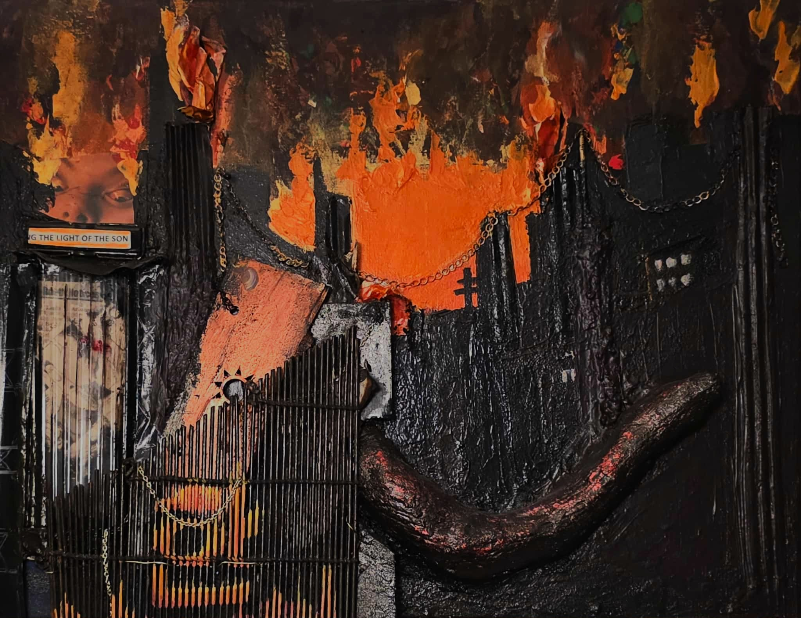
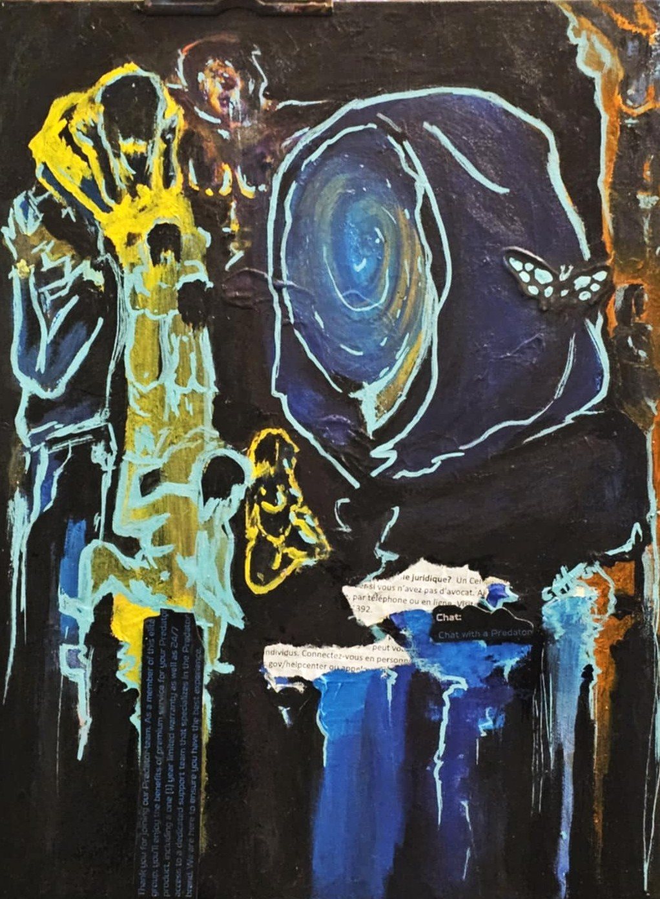
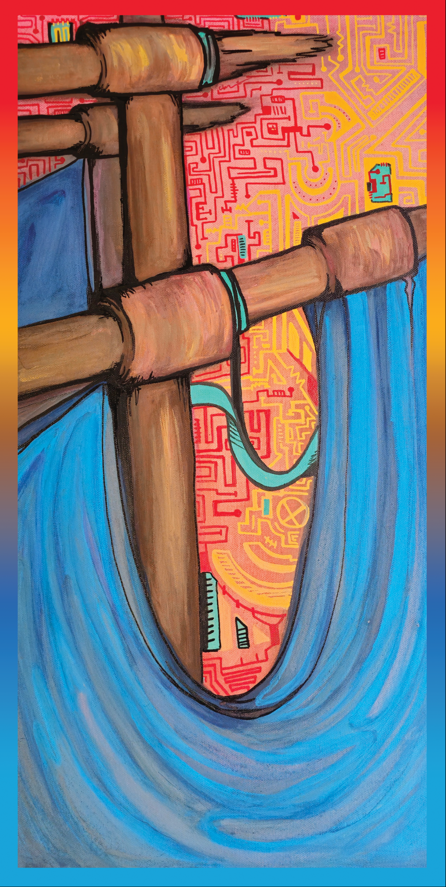

Echoes
This series draws attention to the often-overlooked realities that exist behind screens, algorithms, and seemingly ordinary online interactions.

“Faceless”
Connections lost in digital spaces.
Connections lost in digital spaces.

“Phantom Sails”
Predators sail free, cloaked in anonymity, drowning unseen.
Predators sail free, cloaked in anonymity, drowning unseen.

“Mother's Mirage
Blood loses its meaning when spilled in the desert sun.
Blood loses its meaning when spilled in the desert sun.
“Burning Son”
Lives burned, but sons move on leaving only echoes behind.
Lives burned, but sons move on leaving only echoes behind.